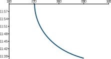
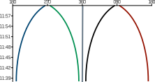

WO-Trainer Uboote HILFE
Die erste Frage, die Sie mit dem CEP beantworten können, ist das Anlaufverhalten eines Kontaktes. Hierbei können Sie dirket mit einem Blick erkennen, ob die Kurve des Kontaktes konkav oder konvex ist. Bei einem konkaven Kurvenverlauf wird die Bearingrate über die Zeit kleiner. Bei einem konvexen Kurvenverlauf steigt die Bearingrate über die Zeit an. Damit die Zusammenhänge aus dem Familytree weiterhin gültigkeit haben, bedeutet dies, dass ein Fahrzeug mit konvexem Kurvenverlauf anlaufend, und ein Fahrzeug mit konkavem Verlauf ablaufend ist.
Abbildung 1: Die Abbildung zeigt ein konvexes Kurvenverhalten. Die Bearingsrate steigt mit der Zeit. Der Kontakt ist anlaufend.

Abbildung 2: Die Abbildung zeigt ein konkaves Kurvenverhalten. Die Bearingrate sinkt mit der Zeit. Der Kontakt ist ablaufend.
Merken Sie sich:
KONVEX: Gefährlich wie eine Hex
KONKAV: Brav wie ein Schaf
Mit dem Wissen über das unterschiedliche Kurvenverhalten bei an und ablaufendn Kontakten, können Sie ebenfalls direkt den CPA im CEP erkennen. Es liegt immer dann ein CPA vor, wenn die Kurve von konvexem zum konkavem Kurvenverhalten wechselt. Dieser Zusammenhang benötigt keiner weiteren Erklärung.
Abbildung 3: Kontakt im CPA zur Minute 51. Wenn die Fahrt des Fahrzeuges bekannt ist, können mit dieser Information ebenfalls weitere Abschätzungen getroffen werden. Wenn $\mathrm{v_d > v_e}$ hat das Fahrzeug eine Lage von ca. 90. Weiterhin haben in diesme Fall Kontakte, die nach rechts gehen, immer einen Bug rechts und umgekehrt. Aufgrung dieses Zusammenhanges gilt in diesem Fall ebenfalls $\mathrm{R_m = 1936\times \frac{OSA \pm v_d}{\dot{B}}}$.
Um den Bug eines Fahrzeuges bestimmen zu können, müssen Sie zusätzlich zum Kurvenverhalten des Gegners, ebenfalls den relativen Abstand des Gegners zu Ihrer Kursvorrausrichtung kennen.
Merken Sie sich:
Ist das Fahrzeug links und geht nach rechts, dann hat es Bug rechts.
Ist das Fahrzeug rechts und geht nach links, dann hat es Bug links,
In allen anderen Fällen kann der Bug des Fahrzeuges ohne weitere Berechnungen nicht abschließend bestimmt werden.

Abbildung 4: Die Abbildung zeigt im Verhältnis zur Eigenbootslinie (grau) gesamt vier anlaufende Kurven. Hierbei hat die blaue Kurve Bug rechts und die rote Kurve Bug links. Für die verbleibenden Kurven (schwarz und grün) kann der Bug nur mit diesem CEP nicht bestimmt werden.
Der Begriff stehende Peilung fasst alle Situationen zusammen in denen $\mathrm{\dot{B} = 0}$ ist. In diesem Fall können Sie weder ein konvexes noch konkaves Kurvenverhalten feststellen, da sich die Peilung des Gegners nicht verändert. Auch wenn ein Fahrzeug mit stehender Peilung nicht anlaufend sein muss, sind diese Situationen immer besonders gefährlich, da ein Fahrzeug, wenn es anläuft einen CPA von 0 hat.

Abbildung 5: Eine stehende Peilung kann durch eine dieser 7 Situationen zustande kommen. Hierbei sind insbesondere die Fälle mit anlaufem Fahrzeug besonders gefährlich, da hier der CPA 0 ist. Halten Sie keine Fahrzeuge unbewusst in einer stehenden Peilung. Ändern Sie Ihren Kurs, sodass die Fahrzeuge wieder eine Bearingrate bekommen.